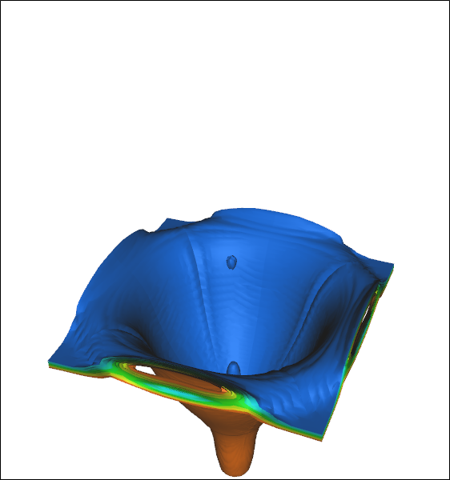
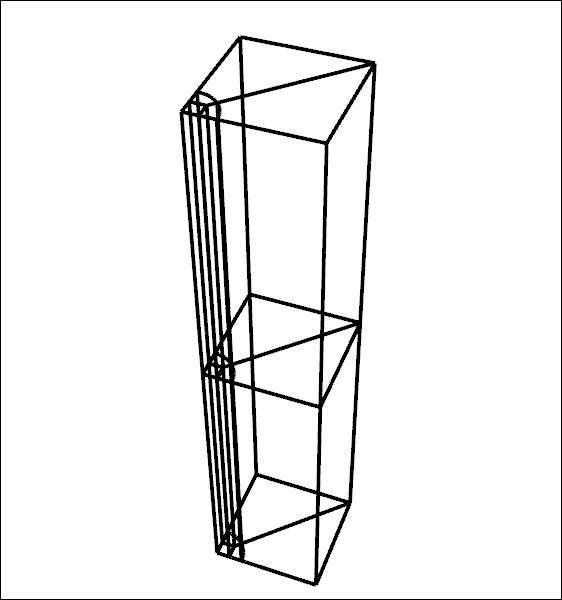
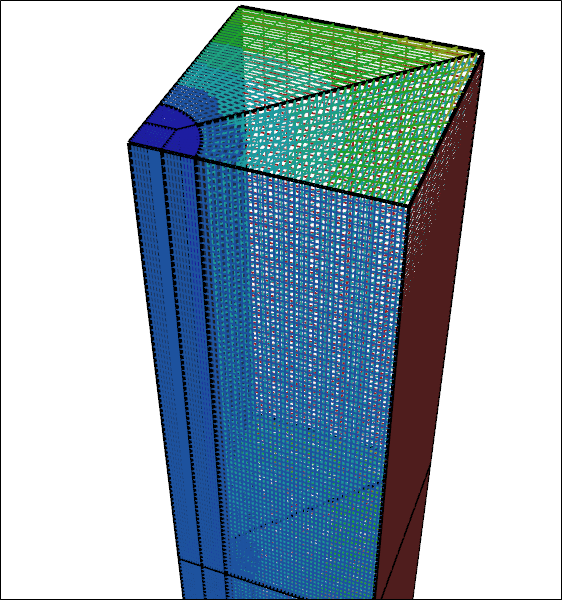
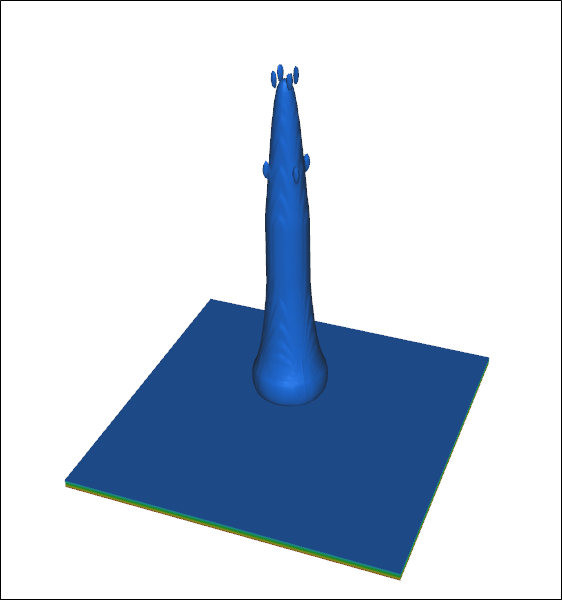
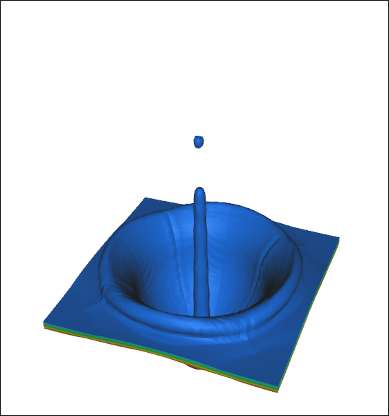

How to Make a Splash in CFD
It is a common occurrence: a rain drop falls into a puddle; a leaky faucet drips into a sink of water. This seemingly simple event has some complex physics in play that advanced multi-phase, free-surface (volume of fluid - VOF) Computational Fluid Dynamics (CFD) can simulate. Not only can CFD simulate water impact in a pool, it can also produce a beautiful 3D visualization of the process as an animation. Follow along to see how you can use Caedium Professional to simulate a water droplet falling into a pool of water.
VOF Free Surface Caedium CFD SimulationDroplet crater
Geometry
The geometry for this droplet simulation is straightforward - a single box that represents a quarter (assuming symmetry) of the pool and air above it through which the droplet will fall. To model the droplet you need a circular quadrant embedded in the face above the pool to serve as an inlet. Also you need to segment the box so that you can initialize the pool of water separately from the air. Even with these constraints the geometry is still relatively simple and so you can construct a multi-block volume (4-edged faces and 6-faced volumes) that constraints the subsequent mesh to be suitable for hexahedral elements. For free-surface CFD simulations hexahedral elements are typically preferred for their improved accuracy compared to tetrahedral elements.
Multi-Block Flow Domain Geometry
Meshing
Using the multi-block volume structure and having connected all the co-incident faces you can then group the volumes into a flow domain and apply meshing constraints to obtain adequate mesh resolution.
Multi-Block Flow Domain MeshQuadrilateral surface elements
Physics
Standard boundary conditions are suitable for the symmetry planes and walls of the box. Note that there are no boundary conditions applied to the internal shared faces, as the fluid must be able to pass freely through them.
To inject water for a brief moment to form the droplet you use time-dependent inlet variants for velocity and alpha1 (water or air) according to:
- U = Time Dependent, Derivation = table ( (0. (0 0 -4)) (0.01 (0 0 0)) ), meaning at time = 0 s, velocity = [0 0 -4] m/s and at time = 0.01 s, velocity = [0 0 0] m/s
- alpha1 = Time Dependent, Derivation = table ( (0. 1) (0.01 0) ), meaning at time = 0 s, alpha1 = 1 (water) and at time = 0.01 s, alpha1 = 0 (air)
To allow air to leave the flow domain while water is being injected you need to assign the upper faces surrounding the inlet as an outlet.
You need to match the solver time step with the reference velocity to ensure adequate temporal resolution of the movement and subsequent impact of the droplet. However, the time step should not be so small that the simulation takes excessive CPU time to complete.
Results
As the simulation runs you can simultaneously record a movie, with each frame representing the latest 3D visualization results update. This approach is called co-processing, as opposed to post-processing, and alleviates the need to gather and process massive amounts of results data after the simulation ends.
VOF Free Surface CFD SimulationDroplet impact into a pool
Shown below are individual frames from the movie.
Droplet
Droplet Impact
Droplet Crater
Notes
- The CFD simulation and movie were created in Caedium Professional using the transient VOF solver for water and air.
- Related Caedium tutorials:
- Multi-block topology construction in "Water Tank"
- Movie creation for a tank filling simulation in "Transient Water and Air Flow in a Tank"
Feedback
Questions? Ideas? Problems?

Recent blog posts
- CFD Simulates Distant Past
- Background on the Caedium v6.0 Release
- Long-Necked Dinosaurs Succumb To CFD
- CFD Provides Insight Into Mystery Fossils
- Wind Turbine Design According to Insects
- Runners Discover Drafting
- Wind Tunnel and CFD Reveal Best Cycling Tuck
- Active Aerodynamics on the Lamborghini Huracán Performante
- Fluidic Logic
- Stonehenge Vortex Revealed as April Fools' Day Distortion Field
 Get our Blog feed
Get our Blog feed